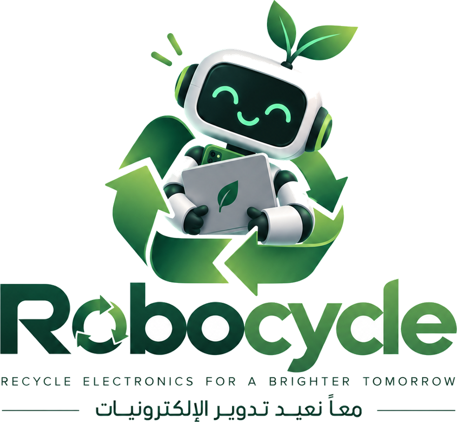

62M t
Generated worldwide each year
Electronic waste is the fastest-growing waste stream on the planet, and it grows faster than the systems built to collect it.
Global figure, reported for 2022.
Electronic waste doesn’t disappear.
It goes somewhere.

RobocycleRecycle electronics for a brighter tomorrow معاً نعيد تدوير الإلكترونيات
Environmental technology · Kuwait
Every household keeps a box of dead electronics. Chargers, phones, laptops, batteries — stored beside each other for years, degrading quietly. Robocycle moves them out of the home and back into use: community collection booths, rewards for bringing devices in, tracking for every unit collected, and recovered components redirected into working technology projects.
معاً نعيد تدوير الإلكترونيات — لنمنح الأجهزة حياة ثانية.
The problem
Stored electronics are not inert. Lithium cells swell and vent as they age, damaged cables arc under load, and overloaded power strips carry devices that were never meant to stay connected. Alongside the fire risk sits the slower one: heavy metals in household waste, and recoverable material thrown away.
Electronic waste is the fastest-growing waste stream on the planet, and it grows faster than the systems built to collect it.
Global figure, reported for 2022.
The rest is stored, discarded with household waste, or handled informally — which is where both the safety risk and the material loss occur.
Global rate, reported for 2022.
Most devices are not thrown away when they stop being used. They are kept — ageing next to other cells, in unventilated spaces.
The interval Robocycle exists to shorten.
The solution
Robocycle runs the full path a device takes after it leaves the home — and keeps that path visible to the person who handed it over.
Community collection booths sited where people already go: malls, co-ops, university campuses and municipal buildings. No appointment, no fee.
Each accepted device earns points, weighted by what can be recovered from it. Points convert to partner credit — responsible disposal pays.
Every unit gets an ID at the booth. Follow it through intake, triage, component recovery and reuse, from the device page.
Working parts are identified, catalogued and redirected to student, robotics and research projects instead of being shredded for scrap.
Collection network
Booths accept phones, laptops, tablets, chargers, cables, power strips, small appliances and loose batteries. Batteries are taken into separate, fire-rated containment on deposit.
Recovery
Triage separates what still works from what does not. Screens, drives, memory, motors, sensors, connectors and controllers are tested, graded and listed — then routed to projects that would otherwise buy the same parts new.
Each intake is opened and inventoried. Components are tested against their spec, not guessed at from the model number.
Graded parts enter a searchable inventory with their condition, origin device and the tests they passed.
Schools, university labs and robotics teams in Kuwait request parts from the catalogue. Material that cannot be reused goes to licensed processing.
Tracking
Enter the ID printed on your booth receipt to see where the device is in the process, what was recovered from it, and where those components went.